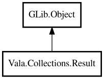

Result
Object Hierarchy:

Description:
public class Result<T,E> : Object
A container representing either a success value or an error.
Result is used for operations that can fail, providing a type-safe alternative to exceptions. Inspired by Rust's Result, OCaml's result,
and Go's error-return pattern.
Example:
var success = Result.ok<string,string> ("data");
assert (success.isOk ());
assert (success.unwrap () == "data");
var failure = Result.error<string,string> ("not found");
assert (failure.isError ());
assert (failure.unwrapOr ("fallback") == "fallback");
Content:
Static methods:
Methods:
- public bool isError ()
Returns whether this Result is an error.
- public bool isOk ()
Returns whether this Result is a success.
- public Result<U,E> map<U> (owned MapFunc<T,U> func)
If this is a success, applies the function to the value and returns a
new Result. If this is an error, returns the error unchanged.
- public Result<T,F> mapError<F> (owned MapFunc<E,F> func)
If this is an error, applies the function to the error and returns a
new Result. If this is a success, returns the value unchanged.
- public T unwrap ()
Returns the success value. Returns null if this is an error.
- public E unwrapError ()
Returns the error value. Returns null if this is a success.
- public T unwrapOr (T defaultValue)
Returns the success value if present, otherwise returns the given
default value.
Inherited Members:
All known members inherited from class GLib.Object
- @get
- @new
- @ref
- @set
- add_toggle_ref
- add_weak_pointer
- bind_property
- connect
- constructed
- disconnect
- dispose
- dup_data
- dup_qdata
- force_floating
- freeze_notify
- get_class
- get_data
- get_property
- get_qdata
- get_type
- getv
- interface_find_property
- interface_install_property
- interface_list_properties
- is_floating
- new_valist
- new_with_properties
- newv
- notify
- notify_property
- ref_count
- ref_sink
- remove_toggle_ref
- remove_weak_pointer
- replace_data
- replace_qdata
- set_data
- set_data_full
- set_property
- set_qdata
- set_qdata_full
- set_valist
- setv
- steal_data
- steal_qdata
- thaw_notify
- unref
- watch_closure
- weak_ref
- weak_unref